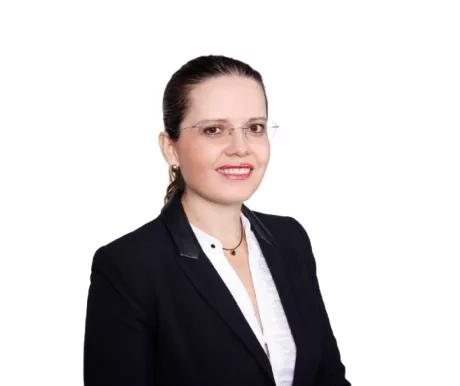
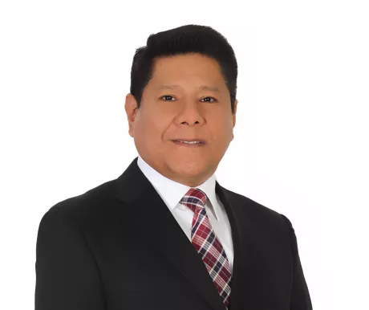

Contactanos
Elige el formato de tu interes
Fecha de Inicio: 18 de junio
Horario: Martes y jueves de 6:30 p.m a 10:30 p.m
Duración: 22 meses aproximadamente
Duración: 25 cuotas de S/.900
Contacto: Fiorella Leonardi al 905 448 000, 924 361 407
Fecha de Inicio: 18 de junio
Horario: Martes y jueves de 6:30 p.m a 10:30 p.m
Duración: 22 meses aproximadamente
Duración: 25 cuotas de S/.740
Contacto: Fiorella Leonardi al 905 448 000, 924 361 407
Fecha de Inicio: 13 mayo
Horario: Online
Duración: 18 meses aproximadamente
Inversión: 20 cuotas de S/.845
Contacto: Fiorella Leonardi al 905 448 000, 924 361 407
Siempre Conectados
Ricardo Amenero
Egresado de la Maestría en la EPGUTP, Padre, Arquitecto del Proyecto
del Museo Nacional, Fotógrafo.
Agentes de Cambio con Soluciones Concretas
La Maestría en Gestión de la Construcción ha sido diseñada con el objetivo de formar profesionales
que sean agentes de cambio y puedan ofrecer soluciones concretas a los problemas reales de la
construcción.
Para ello, es imprescindible que dominen los pilares esenciales de la industria y destaquen por sus
habilidades para la planificación y control de proyectos de construcción; su capacidad técnica para
aplicar las metodologías más modernas, efectivas e innovadoras; y su iniciativa para mejorar la
productividad al reducir los riesgos para garantizar la sostenibilidad.
Beneficios
-
Liderazgo Transformador
El programa promueve una relación de estimulación y crecimiento que convierte a los seguidores en
líderes y a los líderes en agentes de cambio. Se fomenta el desarrollo de habilidades y aptitudes
gerenciales, estratégicas e interpersonales. -
Innovación Tecnológica y Gestión de Proyectos de Construcción
La estructura curricular integra procedimientos y técnicas modernas para la ejecución de obras, valorando
la importancia de la industrialización, modularidad, prefabricación y constructabilidad desde etapas tempranas
de un proyecto. El programa brinda además las competencias necesarias para gestionar eficaz y eficientemente
proyecto de edificación e infraestructura. -
Toma de Decisiones en el Sector Construcción
La Maestría proporciona herramientas para resolver eficientemente los diferentes problemas que
pueden surgir en la formulación y desarrollo de los proyectos de Construcción, siendo capaces de
determinar la factibilidad de las obras y tomar decisiones en cuanto a inversiones. -
Proyección Global
Este programa fomenta el desarrollo de habilidades y aptitudes directivas, estratégicas e
interpersonales, convirtiendo a nuestros estudiantes en líderes. -
Gestión de Espacios Urbanos
Se incorporan las estrategias necesarias para gestionar sosteniblemente los aspectos
socioeconómico, ecológico y funcional de los espacios urbanos, haciéndolos accesibles, seguros
y atractivos con la finalidad de propiciar un desarrollo ordenado y armónico de las ciudades. -
Nuestro Estilo de Pensamiento + Aprendizaje
La Maestría en Gestión de la Construcción emplea nuestra metodología de enseñanza, la cual integra las
últimas tendencias en la gestión de la construcción con la evolución del pensamiento y la mentalidad
emprendedora. Este programa transforma la visión del participante y lo impulsa a desafiar sus límites
para proponer soluciones innovadoras en sus proyectos. -
Equipo Docente con Formación Académica sólida y Trayectoria Empresarial para crear una Verdadera Experiencia de Aprendizaje
La plana docente de la Escuela de Postgrado de la UTP está conformada por profesionales expertos que tienen
una trayectoria forjada en la dirección de reconocidas empresas del sector inmobiliario y construcción. -
Evaluación de Competencias
En la EPG nos aseguramos de que nuestros estudiantes logren las competencias generales y
específicas ofrecidas en cada programa de maestría. Por ello, todos los estudiantes participan
en una medición de competencias, en dos oportunidades, durante sus estudios. Cada estudiante recibe
un informe personalizado con sus resultados, los que permiten identificar oportunidades de mejora.
Esta información nos permite seguir mejorando nuestros procesos formativos, ya que estamos comprometidos
con la mejora continua.
Docentes
-
Abel Muñoz
Magíster en Administración Estratégica de Empresas, Centrum Católica. Experiencia en Gestión Integral de Proyectos y Capacidad de Trabajo en equipos multidisciplinarios. Ha sido Gerente de Desarrollo de Proyectos Inmobiliarios en PRI INVEST TRUST & CAPITAL S.A.C. - NUVÓ GRUPO INMOBILIARIO S.A.C.
-
Adela Zevallos

Máster en Inteligencia Emocional en la U. Complutense de Madrid (España). Facilitadora en la Metodología Lego® Serious Play®. Es Consultora Senior en Cambridge International Consulting y Whalecom. Ha sido Consultor Senior de selección de personal en MIDIS.
-
Alejandro Robatti

MBA, U. Piura, con más de 20 años de experiencia laboral en multinacionales, nacionales y centros corporativos líderes de los sectores de consumo masivo, minería y teleco en roles gerenciales a nivel local como regional. Socio en HR-IN y Consultor en Prosperconsulting (USA).
-
Alfredo Salinas

Doctorando en proyectos, UNINI (México). Máster Gestión Ambiental, UPC. Ingeniero RNR, UNAS. 25 años trabajando en instituciones públicas y privadas en temas de gestión de proyectos. Especialista en Infraestructura The Nature Conservancy.
-
Anabel Reaño
Máster en Administración de Negocios y TI (MBA-IT), U Lima. Ingeniera Industrial, UCSMA graduada con honores. Con capacitación profesional en Silicon Valley California - EEUU. Ejecutiva de Evaluación de Proyectos en Proinnóvate del Ministerio de la Producción. Se desempeñó como Gerente General en SENCICO.
-
Berenice Palomino

Doctoranda en Educación, Universidad de Valencia (España). MBA Directivo, UPC. MBA, IEDE (España), Psicóloga Educacional, PUCP. Diplomada en Administración de Proyectos TI. Es Jefe Académico de la EPGUTP, facilitadora certificada de la Metodología Lego® Serious Play® y Fundadora de TesisTip.
-
Carlos Daniel Echaiz
Magíster en Derecho de la Empresa, PUCP. Abogado, U. Lima. Socio de Echaiz Abogados. Director de Family Business Consulting. Árbitro del Centro de Arbitraje CCL.
-
Daniel Onchi

Magister en Supply Chain Management, ESAN. Ingeniero Zootecnista, UNALM (España). Genética Aviar-JICA (Japón). Especialista en Operaciones y Logística Marítima-Escola Europea Intermodal Transport (Italia). Director de la Maestría en Gerencia de Operaciones y Logística, UTP. Asesor Gestión Empresas, Operaciones y SCM.
-
David Bravo

Máster en Docencia Universitaria y Gestión Educativa, UTP. Bachiller en Ingeniería de Sistemas y Computación, Universidad Peruana Los Andes. Técnico en Marketing, Universidad del Pacífico. Docente en la EPGUTP y en CERTUS. Agente Inmobiliario Registrado. Ha trabajado en Unilever como Gerente de Marca y Gerente de Ventas, en Nabisco Perú como Gerente de Ventas Lima, en Donofrio como Gerente de Ventas Perú y en Bella Holandesa del Perú como Gerente de Ventas Perú.
-
Diana Avilés
Doctora en Ciencias Técnicas, Instituto Superior Politécnico José A. Echevarría (Cuba) Especialista en Pensamiento Estratégico Urbano, CIDEU. Es Gerente General de CICAPSO S.A.C. Publicó el artículo “GEUSSA: Metodología de Gestión de Espacios Urbanos Sostenibles, Shigyo-Avilés en coautoría en la Revista Sinergia e Innovación, UPC.
-
Duber Soto

Doctor en Administración de Empresas, UPC (España). Director de Independiente y consultor estratégico de empresas. Ha sido Decano de la Facultad de Ciencias de Gestion de la UA (Peru). Miembro del comité de Acreditacion de programas de posgrado y asesor de calidad. Investigador RENACYT.
-
Edmundo Casavilca

Doctor en Contabilidad y Finanzas, USMP. MBA, UDQM (Canadá). Experiencia académica y profesional, en diferentes puestos relacionados con la gestión de empresas y la toma de decisiones. Director financiero de INMECI. Consultor del CII miembro del Grupo del BID.
-
Eduardo Ferreyra

MBA, EPGUTP. Programa Ejecutivo en Marketing Centrum Católica, Coach Certificado Profesional de Global Impactum School Of Coaching, Especialización en Inteligencia Emocional y Neurociencias Aplicado a la Docencia Universitaria de Universidad Abierta Interamericana de Argentina. Ha sido Gerente de Cuentas Clave en Bitel Perú, Jefe e Postventa y Desarrollo Comercial en Fiberlux.
-
Manuel García Naranjo

Maestría en Ingeniería Hidráulica, U.Newcastle Upon Tyne (Inglaterra). Curso Internacional de Ingeniería Hidráulica, Línea de Ingeniería Costera, International Institute for Hydraulic and Environmental Engineering (Holanda). Es Gerente General de MGN Hydro Consult S.A.C.
-
Federico Vargas

Maestro en Banca de Finanzas, IEB en la U. Complutense de Madrid (España) .Certificado en Scrum Master (SMC™). Es CEO-Director en el Grupo Empresarial 360, Centro América y el Caribe y Director of the Board Global Accreditation Center, PMI®. Empresario y Gerente de Negocios con más de 19 años de experiencia Gerenciando Organizaciones y Proyectos en todo tipo de industrias, tales como Ingeniería, Telecomunicaciones, Tecnologías de Información, Financiero, Desarrollo Social y Consultoría.
-
Felipe Quispe
Maestría en Finanzas, ESAN. MBA, UNMSM. Estrategia Financiera, ESADE (España). Especialista en Tributación, PUCP. Gerente de Contabilidad en Hermes y Director en Confinad Consultores. Ha sido Contador Tributario en Molitalia y Gerente en diversas empresas.
-
Felipe Vanini

Magister Administración, ESAN. PDD, PAD. Ingeniero Industrial, UNT. Gerente General ARAMEUS consultora estratégica en crecimiento. Fue Gerente General Deprodeca (Gloria), Corp. Custer (Consumo Masivo) y Layconsa. Gerente Unidad Negocio/Marketing Supermercados Peruanos, Axur, TQC y otros.
-
Fernando Nakasone

Master en Dirección de Marketing y Gestión Comercial, UPC. Gerente General en Billin Salon & Spa. Ha sido Gerente de Agencia en Pacífico Vida y Market Researcher en Kanehide Shoji.
-
Gerardo Fernández
MBA, UP. Magíster (MSc) en Gestión de la Energía, New York Institute of Technology (EE.UU). Jefe de Ingeniería en CONCAR (Grupo Graña y Montero). Ha sido Jefe de Proyectos de Interferencias y Gestión de la Energía en el Consorcio Constructor Línea 2 del Metro de Lima y Director de Gestión del Gas Natural (e) en el Ministerio de Energía y MInas.
-
Ingrid Guevara
MBA, CENTRUM PUCP. Magíster en Gestión y Desarrollo Inmobiliario, ESAN. Arquitecta, UNPRG. Jefe de proyectos en BESCO SAC. Tiene experiencia en Gestión de Proyectos y Negocios Inmobiliarios: formulación de proyectos; gestión comercial, económica-financiera.
-
Iván Oviedo
Magíster en Dirección de Marketing y Dirección Comercial, EAE Business School (España). Gerente Comercial y Marketing en Geosys Perú y Business Development Manager en Degreed para Ecuador, Perú y Bolivia. Ha sido Sub Gerente de Marketing de Western Union Perú.
-
Jaime Cruz
MBA, UTP. Abogado, PUCP, Gerente General y accionista mayoritario de TEIJA SAC.
-
Jorge Bouverie
Maestro en Docencia Universitaria y Gestión Educativa, UTP. Arquitecto, URP. Mejor Tesis de Grado FAU 2003 sobre Sostenibilidad. Diseño y construcción de proyectos residenciales, comerciales y Arq. Efímera para eventos.
-
José Campos

Máster, IESE (ESPAÑA). PAD Ingeniero Industrial colegiado U. Lima. Docente investigador EPGUTP. Gerente General VILLADEDOOD. Gerente Banca Empresa y Corporativa BBVA.
-
José Lecaros

MBA, UTP. Administrador de Empresas, PUJC (Colombia). Gerente General y Dueño JELL STRATEGIC ALIGNMENT. Coordinador de Negocios para América Latina ZAMBON Colombia. Miembro del American Marketing Association (AMA - USA)
-
José Rojas

MBA, UPC. Acreditado como Auditor Líder para la implementación de Sistemas de Calidad. Es Gerente en Entrega2 S.A.C. e Integra2 S.A.C. Ha sido Gerente de la Unidad de Logística Ligera y Documentos Valorados en DATAIMAGENES S.A.C. (Empresa del Grupo El Comercio).
-
Juan Carlos De La Torre

MBA con Mención en Negocios Internacionales, ESAN. Programa de Certificación en APP para Perú, MEF. Experiencia profesional de más de 18 años en proyectos de Asociaciones Público Privadas, asesorando a entidades en la estructuración de proyectos en diversos sectores. Es Asesor Financiero para la Agencia de Promoción de la Inversión Privada en PROINVERSIÓN.
-
Julio Granados

Magister en Educación Superior con mención en Acreditación, U. Occidente (Nicaragua) y MBA, UTP. Auditor en Sistemas de Gestión de Calidad - ISO 9001. Es Jefe de Proyectos Educativos, EPGUTP. Ha sido Supervisor de Carreras Profesionales en IFB-ASBANC y Responsable de Acreditación, Evaluación docente en diversas Instituciones Educativas.
-
Karina Cerna
Doctoranda en educación, Magister en investigación y docencia universitaria, UIGV. Decana del Colegio de Agentes Inmobiliarios del Perú. Jefe de la OTEGRYL en el Congreso de la República. Reconocimiento de la ODM 2015 y de la CONACO como "Mujer emprendedora". Social Media Manager 2021.
-
Luis Del Carpio

Magíster en Administración y Magíster en Finanzas, UP. Más de 15 años de experiencia en Proyectos de Inversión Público-Privada. Es Director Proyecto y Sub Director de Servicios a Proyectos en Proinversión. Director de Proyecto Anillo Vial Periférico de Proinversión. Programa de capacitación en Gestión Urbana para un Desarrollo Sostenible Agencia de Cooperación Internacional del Japón - JICA, entre otros
-
Luis Merino

Doctorando UPC (España). MBA, ESAN. Ingeniero Metalurgista, UNSA. Director de Selstrat, consultora de negocios. Ha sido Gerente General de Colegios Proeduca S.A.
-
Luisa Gonzales
MBA, UPC. Más de 16 años de Experiencia en el Sector Retail. Es Gerente Comercial de Conveniencia y Tiendas de Conveniencia en la Marca Mimarket y Boticas Mifarma. Ha sido Gerente de Proyectos de Nuevas Tiendas en Lindcorp (Tambo+).
-
Manuel García Naranjo
Maestría en Ingeniería Hidráulica, U.Newcastle Upon Tyne (Inglaterra). Curso Internacional de Ingeniería Hidráulica, Línea de Ingeniería Costera, International Institute for Hydraulic and Environmental Engineering (Holanda). Es Gerente General de MGN Hydro Consult S.A.C.
-
Pedro Kanashiro
Magister en Docencia Universitaria y Gestión Educativa, UTP. Especializado en el diseño y ejecución de cursos relacionados a habilidades blandas. Actualmente es Director de Cuatro & Compañía, empresa dedicada a la transformación de personas a través de actividades artísticas y lúdicas
-
Pedro Reyes

Magister en Dirección de Personas, UP y Desarrollo Organizacional, UDD (Chile). Gerente de RRHH en Synlab. Ha sido Gerente de Gestión Humana en Acurio Restaurantes, Grupo Vital y Delosi (BK y KFC). Ejecutivo Senior con mas de 15 años de experiencia en RRHH.
-
Pilar Tabja

Maestra en Marketing y Gestión Comercial, EPGUTP. Ha sido Directora Creativa y Gerente Corporativa de Comunicación en Belcorp. Especialista en Comunicación Visual, planificación e investigación de Mercado.
-
Samuel Rivera

Magíster en Administración Estratégica de Empresas, PUCP. Máster en Liderazgo y Gestión Pública, U. Internacional de la Rioja (España). Es Asesor Legal en Concesiones y Asociaciones Público Privadas del Departamento de Megaproyectos de la Contraloría General de la República. Ha sido Asesor en Asociaciones Público Privadas en la Oficina de Gestión de Inversiones del Ministerio de Justicia.
Admision
- Grado Académico de Bachiller (Registrado en SUNEDU)
- Experiencia Laboral relevante, mínimo 2 años.
- Evaluación de las Aptitudes de los Postulantes mediante.
- Entrevista Personal.
- Evaluación de Conocimientos
- Carta de Presentación explicando la Motivación de Estudio en el Programa.